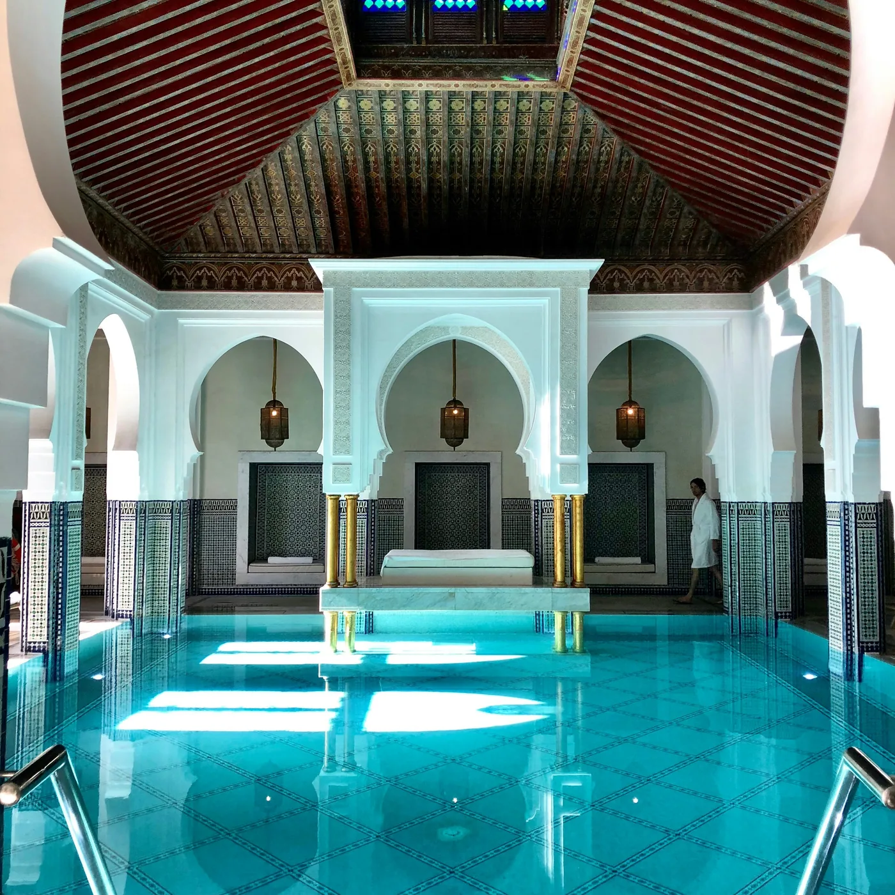
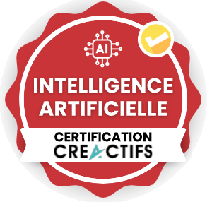

Un site qui convertit
Chaque visite transformée en demande de rendez‑vous ou de réservation.
Esthétique et wellness
Spécialiste des métiers de l’esthétique et du wellness
Passez moins de temps derrière l’écran et plus de temps là où se fait votre chiffre d’affaires.
Croissance et performance
Stratégie digitale
Chaque visite transformée en demande de rendez‑vous ou de réservation.
Une présence locale soignée et une réputation entretenue, avis après avis.
Votre établissement cité par les assistants IA, nourri par des contenus réguliers.
Automatisation et IA
Mails, réseaux sociaux, site : tout est centralisé, déjà traité, répondu en brouillon et trié par ordre de priorité.
Le bon créneau proposé selon vos ressources disponibles, même en dehors des heures d’ouverture.
Un suivi interrompu, un forfait ou un protocole non terminé : le message de relance est prêt.
Contrats, dossiers clients, fournisseurs et historiques : les informations essentielles sont rassemblées pour préparer vos rendez‑vous, suivre vos échéances et faciliter vos décisions.
Analyse et IA
Vos chiffres mis en perspective par l’IA, pour savoir où agir et faire croître votre chiffre d’affaires.
Des décisions fondées sur des faits, pas sur l’intuition
Simulateur
Estimation indicative, affinée poste par poste lors du premier échange
Secteurs
Choisissez votre secteur pour découvrir les enjeux, systèmes et résultats adaptés à votre activité.
Demandes de consultation, suivi patient et présence en ligne, dans le respect de la confidentialité.
Découvrir l’expertise dédiée
Réservations, campagnes saisonnières et coordination des équipes.
Découvrir l’expertise dédiéeOffres lisibles, temps forts anticipés et demandes de séjour mieux suivies.
Découvrir l’expertise dédiéeDemandes, relances et visibilité locale, pour alléger la charge quotidienne.
Découvrir l’expertise dédiéeLe contrôle humain
On automatise d’abord ce qui apporte une valeur claire, sans bouleverser inutilement votre organisation.
Les actions sensibles peuvent conserver une étape de contrôle avant envoi ou exécution.
Les systèmes sont vérifiés avant déploiement et adaptés à la nature des informations traitées.
Les outils existants sont conservés lorsqu’ils restent pertinents.
Offre
Avant d’investir, vous savez précisément ce qui freine votre activité et ce qui mérite d’être traité en premier.
Pour les établissements qui veulent développer leur clientèle : référencement, présence locale, réputation en ligne, parcours du visiteur jusqu’à la prise de rendez‑vous.
Livrable Un état des lieux et un plan d’action pour développer votre clientèle
Pour les structures qui veulent gagner du temps et mieux piloter leur activité : organisation, outils en place et tâches qui pèsent sur vos équipes.
Livrable La cartographie de vos opportunités et une feuille de route priorisée
Fondatrice
+20ans d’expérience terrain dans l’esthétique et le wellness
Du soin à la gestion d’équipe, en passant par l’accueil et l’administratif, je connais de l’intérieur ce qui se joue derrière l’expérience client. Je relie aujourd’hui cette connaissance du terrain à la visibilité en ligne, du référencement aux réseaux sociaux, à l’intelligence artificielle et à l’automatisation.

Questions fréquentes
J’accompagne les entreprises à distance partout en France. Des interventions sur site sont possibles en Île-de-France, selon les besoins de la mission et les modalités convenues ensemble. Ailleurs en France, un déplacement ponctuel peut être envisagé pour vous rencontrer ou organiser une séance de travail.
Chaque intervention est chiffrée sur devis, car tout dépend de l’étendue du travail : votre activité, vos outils et le périmètre retenu. Le premier échange, gratuit et sans engagement, sert à cadrer vos besoins. Vous recevez ensuite un chiffrage global et précis avant de commencer.
Cela dépend du périmètre du projet. Un diagnostic initial prend généralement quelques jours, et une première solution concrète peut être mise en place en quelques semaines. Les interventions plus complètes, impliquant plusieurs automatisations ou une refonte de la visibilité digitale, s’inscrivent sur un temps plus long, défini ensemble dès le départ.
Une automatisation exécute des règles définies à l’avance. Un agent IA analyse un contexte précis, consulte les informations autorisées et prépare une action dans des limites définies. Un système multi-agents fait collaborer plusieurs agents spécialisés sous la coordination d’un agent superviseur. Dans tous les cas, les décisions sensibles restent validées par vos équipes.
Il est surtout pertinent pour les groupes, réseaux et structures multi-sites. Pour un établissement unique, une automatisation ou un agent IA spécialisé suffit souvent. La recommandation se fait après le premier échange, en fonction de votre organisation et de vos priorités.
Oui, lorsqu’elle s’inscrit dans une logique d’automatisation. Je conçois ou repense des sites capables d’intégrer directement des fonctionnalités utiles à votre activité : prise de rendez-vous automatisée, chatbot de qualification, formulaires connectés à votre suivi commercial ou autres parcours adaptés à vos besoins. L’objectif n’est pas de créer un simple site vitrine, mais un site conçu pour informer, orienter et faciliter les actions de vos prospects.
Oui, c’est une exigence de base de chaque projet. Les données de santé sont hébergées dans un environnement certifié HDS, l’hébergement est situé en France et seules les informations nécessaires circulent entre vos outils. Les envois automatisés restent soumis à une validation humaine.
Non. Les automatisations prennent en charge les tâches répétitives : ressaisies, rappels, relances, préparation de réponses. Votre équipe peut ainsi se consacrer à l'accueil, au soin et à l'expérience de votre clientèle ou de vos patients.
Non, dans la grande majorité des cas : on vérifie d’abord ce que votre logiciel sait déjà faire, puis on construit uniquement ce qui manque. Si un changement s’avère préférable, vous recevez une comparaison indépendante, sans lien commercial avec aucun éditeur.
Il dure 30 minutes, il est gratuit et sans engagement. Nous faisons le point sur votre activité, vos outils et les tâches qui vous prennent le plus de temps, puis je vous indique les pistes les plus utiles et la suite possible.
Un échange de 30 minutes pour identifier vos priorités et les solutions les plus adaptées.